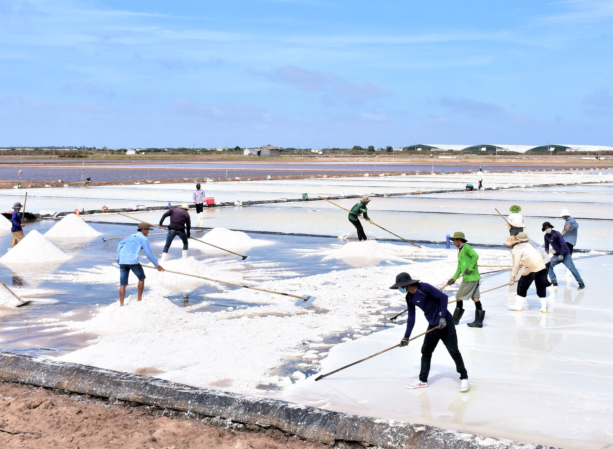

Không chất bảo quản và phụ gia
Khai thác từ thiên nhiên
Hương vị mặn mà và nồng nàn
 |
||
Cách Kết Tinh MuốiNước biển đã lọc tạp chất có độ mặn cao hơn nước biển, tăng dần qua từng cấp phơi. Nước chạt ở vào khoảng từ 18° - 25° thì kết tinh thạch cao. Khi độ mặn của nước chạt từ 25° - 28° thì kết tinh muối. Mỗi công đoạn kết tinh kéo dài 5 ngày. Nước còn lại cuối cùng là nước ót, được đưa về trảng. Như vậy, sau khi thu hoạch, diêm dân có được nhiều loại sản phẩm muối như muối thô hạt từ 1-15mm có màu trắng, ánh xám, ánh vàng, ánh hồng hay muối đen. Có hai cách phơi kết tinh: phơi kết tinh trên ruộng (nước từ ô xếp chuối sẽ được chuyển sang ô kết tinh để phơi) và phơi kết tinh trên bạt (dùng bạt nhựa để trải trên mặt sân phơi). Sau khi muối kết tinh, diêm dân tiến hành thu gom và bảo quản. |
||